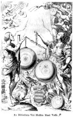

Giovanni Battista Riccioli, Almagestum novum, astronomiam veterem novamque complectens, observationibus aliorum, et propriis novisque theorematibus, problematibus ac tabulis promotam, in tres tomos distributam [... Tomus primus.] Bononiae, ex typographia haeredis Victorij Benatij, 1651. -- (673 A 12)
Na de veroordeling door de Congregatie van het Heilig Officie van de astronomische opvattingen van Nicolaus Copernicus in 1616 en na die door de inquisitie van Galileo Galilei in 1633, kreeg de jezuïet Giovanni Battista Riccioli (1598-1671) de opdracht het standpunt van de katholieke kerk uiteen te zetten en te verdedigen. Zowel de titel van zijn boek: Almagestum novum, een toespeling op de titel van Ptolemaeus’ Almagestum, als de door F. Curtus gegraveerde, allegorische titelprent maakt, ook voor wie daar nog aan getwijfeld mocht hebben, duidelijk aan welke kant Riccioli stond.
De aandacht van de beschouwer van deze prent wordt in eerste instantie getrokken door de twee figuren aan de randen in het midden. Links zien we de honderdogige reus Argus met een telescoop. Zijn wel heel bijzondere lichamelijke eigenschap maakt hem bij uitstek geschikt de praktische astronomie te beoefenen. Uit zijn mond rolt vers 4 van psalm 8: ‘Videbo caelos tuos, opera digitor[um] tuor[um]’ (Ik zal Uw hemelen zien, de werken van Uw vingers). Rechts staat een vrouwenfiguur, wier kleed en scheenplaten met sterren bezaaid zijn, terwijl haar gordel is versierd met de tekens van de dierenriem. Mogelijk is hier vrouwe Astronomia uitgebeeld. Zij spreekt hèt bijbelcitaat uit van hen die geloven dat de aarde niet beweegt: ‘Non inclinabitur in saeculum saeculi’ (Zij zal nimmermeer noch eeuwiglijk wankelen; psalm 104, vers 5). In haar linkerhand houdt zij een ‘armillarium’, een uit ringen samengestelde hemelglobe. Maar, de prominente plaats in de prent wordt ingenomen door de weegschaal die de vrouw in haar rechterhand houdt, met langs de arm: ‘Ponderibus librata suis’ (Volgens hun eigen gewicht gewogen; vergelijk Jesaja 40:12), wat op de inhoud van de twee schalen slaat. Links zien we het (duidelijk te lichte) systeem van Copernicus en rechts dat van Riccioli zelf, een ‘verbeterde’ versie van dat van Tycho Brahe. (Deze had om religieuze redenen vastgehouden aan een on de evenaar; de aardglobe is net zo gespikkeld weergegeven als de aarde in de afbeeldingen van de stelsels van het heelal. In zijn linkerhand houdt Ptolemaeus het wapen van kardinaal Hieronymus Grimaldi, prins van Monaco, aan wie het boek door Riccioli is opgedragen. Ptolemaeus heeft als tekst meegekregen: Erigor dum corrigor’ (Ik word in de hoogte gestoken, terwijl ik word gecorrigeerd). Midden boven zien we het Hebreeuwse tetragram JHWH voor de Godsnaam, en daaronder, in de zonnebaan, Gods hand met drie vingers met ‘numerus, mensura, pondus’ (getal, maat, gewicht, te weten de drie aanduidingen waarmee men iets kan omschrijven, en volgens welke God de wereld heeft geschapen). Links daarvan zijn putti afgebeeld met de zon, samen met Mercurius, Venus en Mars, die om de zon draaien; en rechts putti met de maan, Jupiter (met zijn vier satellieten) en Saturnus (met zijn ring), die volgens Riccioli om de aarde draaien, en een komeet. De hier bijpassende spreuk is vers 3 uit psalm 18: ‘Dies diei eructat verbum, et nox nocti indicat scientiam’ (De ene dag geeft het door aan de andere, de ene nacht maakt het aan de volgende bekend). Dit komt overeen met de symbolische uitbeelding van de dag links en van de nacht rechts.
De afwezigheid van enige verwijzing in deze prent naar Keplers systeem is op zijn minst opvallend te noemen.
Literatuur
- H.A.M. Snelders, ‘Van geocentrisch naar heliocentrisch wereldbeeld’, in: Sterrenkunde. Geschiedenis en moderne inzichten over de bouw en evolutie van het heelal. Utrecht 1984 ( = Studium generale programma. Najaar 1984), p. 15-23.
| vorige pagina | top pagina |